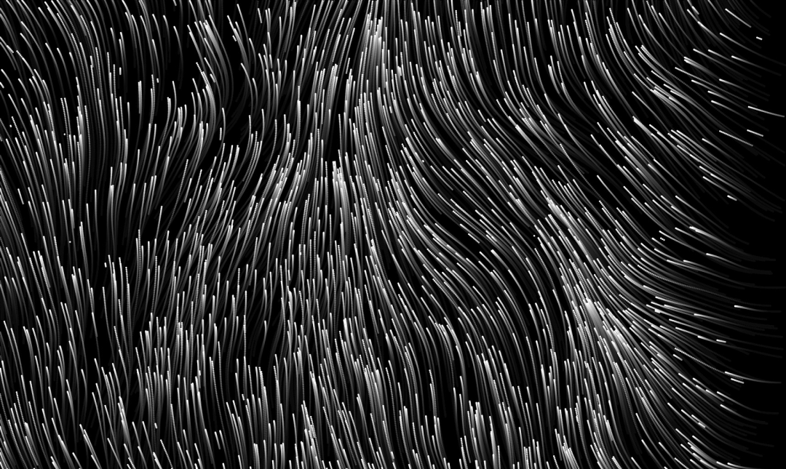
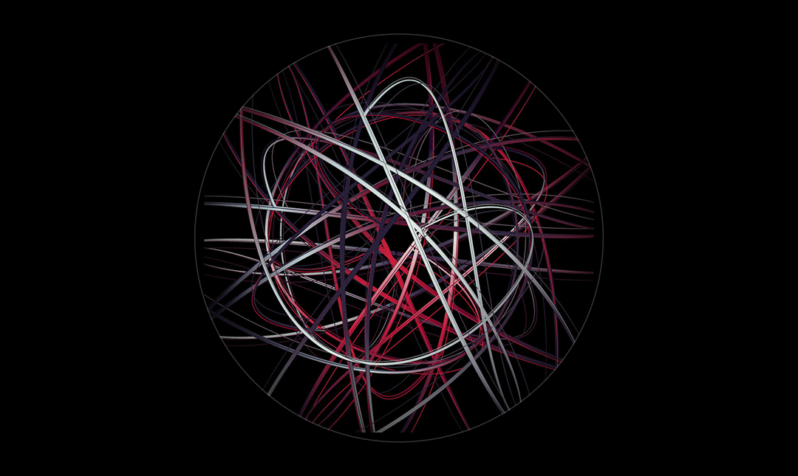
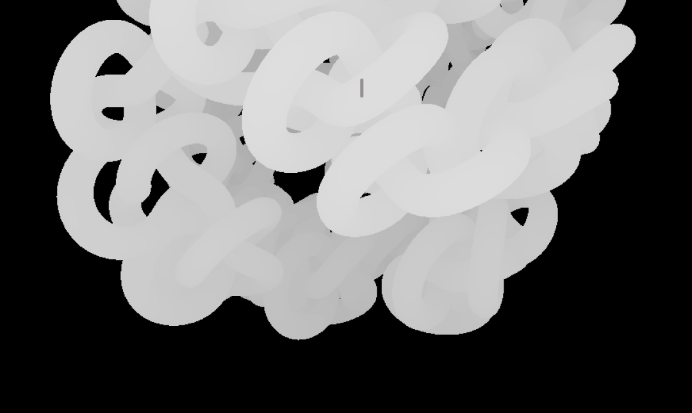

Содержание
В предыдущих статьях мы говорили о веб-плакате как о формате с довольно чёткими границами: одна страница, HTML, CSS, JavaScript, авторское высказывание. Но у этих границ есть интересное свойство — они обозначают стартовую позицию, а не потолок. Когда вы освоили базовый стек и почувствовали уверенность в коде, перед вами открывается целый ландшафт инструментов, которые можно подключить к веб-плакату и вывести его совсем на другой уровень выразительности. Давайте посмотрим, что лежит за пределами ванильного HTML/CSS/JS — и почему веб-плакат оказывается удобной точкой входа во всё это.
Использование Canvas
Базовый веб-плакат работает с DOM-элементами —
div-ами, текстовыми блоками, SVG-формами. Это мощный
инструментарий, но у него есть потолок: когда вам нужны
сотни движущихся частиц, генеративные паттерны или плавные
деформации форм в реальном времени, DOM начинает буксовать.
Здесь на сцену выходит <canvas> —
HTML-элемент, который предоставляет пиксельное полотно для
рисования через JavaScript.
Работать с <canvas> напрямую можно,
но довольно трудоёмко. Именно поэтому существуют библиотеки,
которые оборачивают его в удобный интерфейс. Вот несколько
из тех, что особенно хорошо ложатся на формат
веб-плаката:
P5.js
P5.js пожалуй, самая популярная библиотека для креативного кодинга в браузере. Выросла из Processing, среды, которую создавали специально для художников и дизайнеров. В p5.js можно в несколько строк нарисовать генеративную композицию, добавить реакцию на мышь, подключить звук или видео. Всегда приятно и кайфово смотреть на всякие фракталы и безумные штуки, которые поражают количеством случайных деталей. Чистая красота математики.

Paper.js
Paper.js — библиотека для работы с векторной графикой на canvas. Если p5.js ближе к пиксельному рисованию, то Paper.js думает кривыми, путями и формами — что привычнее для дизайнеров, работающих с Illustrator или Figma. Хорошо подходит для плакатов, где нужны сложные трансформации векторных объектов.

GSAP
GSAP (GreenSock) — анимационная библиотека, которая работает и с
DOM, и с canvas. Она не про рисование, а про движение: code
timeline-анимации, easing-функции, координация сложных
последовательностей. Если CSS @keyframes — это
простые циклические движения, то GSAP — это режиссёрский пульт, с
которого можно управлять десятками анимаций одновременно,
синхронизировать их, ставить на паузу, запускать по триггеру.
Подключить любую из этих библиотек к веб-плакату технически просто — один тег <script> в HTML-файле. Сложность в другом: каждая библиотека предлагает свою логику мышления. P5.js думает кадрами (draw loop), Paper.js — объектами на холсте, GSAP — таймлайнами. Переход к ним из ванильного JS — это освоение нового диалекта, а не нового языка.
Звук и 3D графика
Визуальная выразительность — не единственное направление роста. Браузер умеет работать со звуком, и это открывает совершенно отдельный пласт возможностей. Вот например на наш взгляд один из веб-плакатов, которые активно использует звук в качестве основно приёма для погружения зрителя в пространство.
Каждый из этих инструментов расширяет сенсорную палитру веб-плаката. Визуальное высказывание может стать аудиовизуальным. Плоская страница может обрести глубину. Статичная композиция может отзываться на звук с микрофона или данные с гироскопа телефона. Границы определяются воображением автора и его готовностью разбираться в документации.
Tone.js
Библиотека для создания интерактивного звука и музыки в браузере. С её помощью можно сделать плакат, который звучит: элементы издают тоны при наведении, скролл модулирует частоту, клик запускает ритмический рисунок. Короче полный боекомлект для того, чтобы устроить зрителю настоящий Берлинский рейв на странице браузера. Но есть и альтернативный путь, когда мы пытаемся погрузить зрителя в определённую атмосферу или передать какую-то сложную выразительную идею с помощью звукового сообщения.

Three.js
Three.js — библиотека для 3D-графики в браузере через WebGL. Это уже серьёзный технический скачок, но результаты впечатляют: трёхмерные объекты, свет, камера, текстуры — всё внутри одной HTML-страницы. Правда мало кто доживает до части, когда начинается реальная математика и настройки шейдеров.

Модульный подход
Вот идея, которая, на наш взгляд, заслуживает отдельного внимания. Когда вы освоили canvas-библиотеки, перед вами открывается возможность думать о веб-плакате как о наборе модулей — нескольких холстов внутри одной страницы, каждый из которых решает свою визуальную задачу, но все вместе они формируют единое высказывание.
Представьте: один canvas рисует генеративный фон на p5.js — бесконечно мутирующий паттерн. Поверх него лежит второй canvas с интерактивной типографикой на Paper.js — буквы, которые деформируются при наведении. А третий слой — DOM-элементы с GSAP-анимациями, выстраивающие информационный нарратив через скролл. Вся страница — один плакат, но каждый слой работает на собственном движке.
Такой подход напоминает работу с композитингом в видео или слоями в Photoshop — знакомая дизайнерам логика, перенесённая в код. При этом структура остаётся одностраничной: вы всё ещё создаёте веб-плакат, просто его внутренняя архитектура стала раз в сто сложнее.
Модульность — это ещё и практическое удобство. Каждый canvas можно разрабатывать и тестировать отдельно, а потом собирать в финальную композицию. Если один слой сломался, остальные продолжают работать. Это приучает думать о коде как о системе компонентов — навык, который пригодится далеко за пределами плакатов.
Веб-плакат как точка входа
Вернёмся к тому, с чего начинали. Веб-плакат в своей базовой форме — это HTML, CSS и JavaScript. Это вполне достаточный набор, чтобы создать выразительную работу. Многие из лучших студенческих плакатов в каталоге сделаны именно на этом стеке, без единой внешней библиотеки.
Но если вам захочется пойти дальше — дорога открыта. P5.js для генеративной графики, GSAP для сложных анимаций, Tone.js для звука, Three.js для 3D, Paper.js для вектора. Каждая библиотека — это расширение словаря, а не смена языка. Вы по-прежнему работаете в браузере, по-прежнему пишете JavaScript, по-прежнему создаёте одну страницу.
В этом смысле веб-плакат — это действительно холст. Чистое пространство, которое вы заполняете теми инструментами, которые подходят под вашу идею. Можно ограничиться карандашом и бумагой (CSS-анимации и DOM). Можно достать масло и мастихин (canvas-библиотеки). Можно подключить проектор и колонки (WebGL и Web Audio). Формат выдерживает всё это, оставаясь при этом собой — одной страницей с авторским высказыванием.